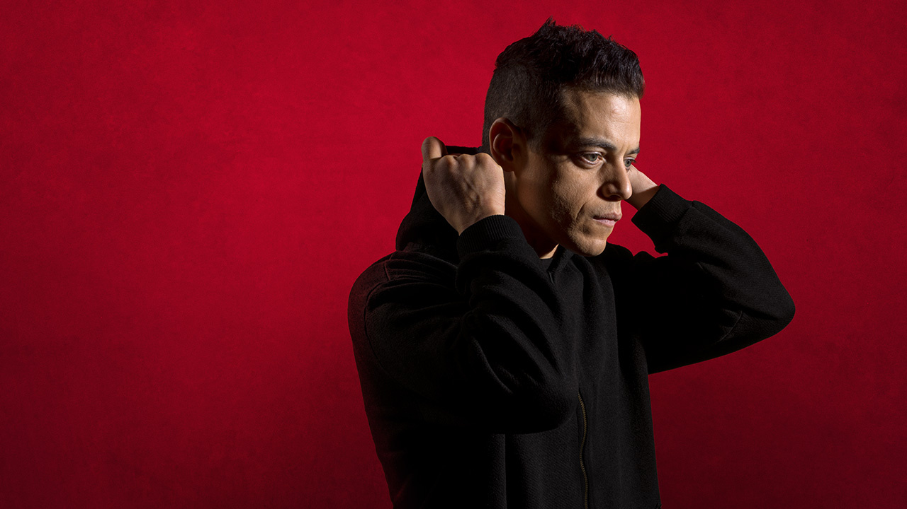
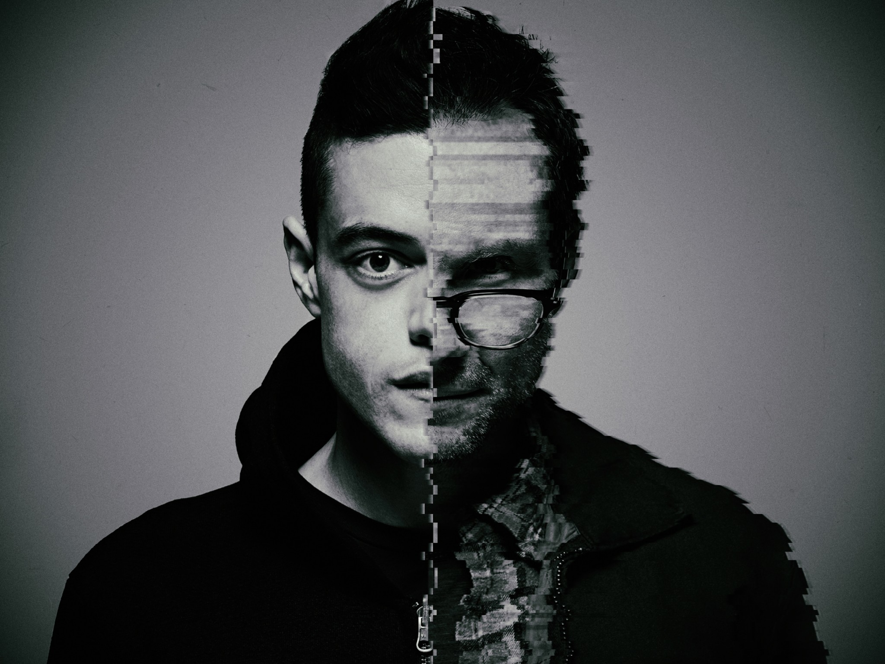
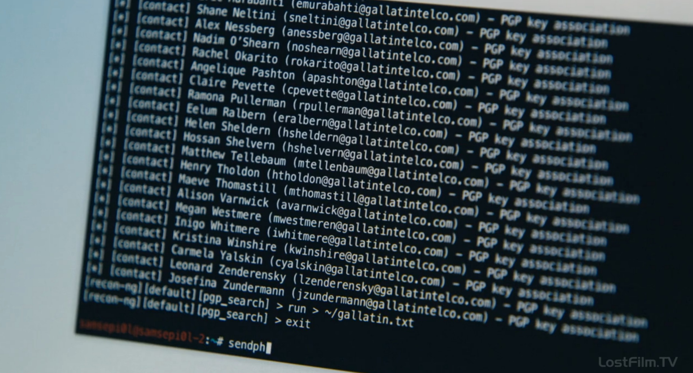

«Ми́стер Ро́бот» (англ. Mr. Robot) — американский психологический телесериал, созданный Сэмом Эсмейлом, и транслировавшийся на телеканале USA Network с 24 июня 2015 по 22 декабря 2019 года.
Сериал повествует об Эллиоте Алдерсоне — молодом инженере кибербезопасности днём и талантливом хакере ночью. Эллиот оказывается на перепутье, когда таинственный лидер подпольной хакерской группы пытается завербовать его, чтобы уничтожить корпорацию, которой он оказывает свои услуги. Вследствие своих личных убеждений Эллиот пытается устоять перед возможностью свергнуть руководителей, которые, по его мнению, управляют миром и рушат его. Эллиот молодой инженер кибербезопасности днём и хакер-активист ночью. Эллиот является интровертом и социально не адаптирован. Из-за постоянного чувства тревоги и беспокойства ему трудно общаться с другими людьми. У него выявлено диссоциативное расстройство идентичности, то есть расстройство множественной личности. Эллиот может терять контроль над своим телом и контроль уходит к нему.
  